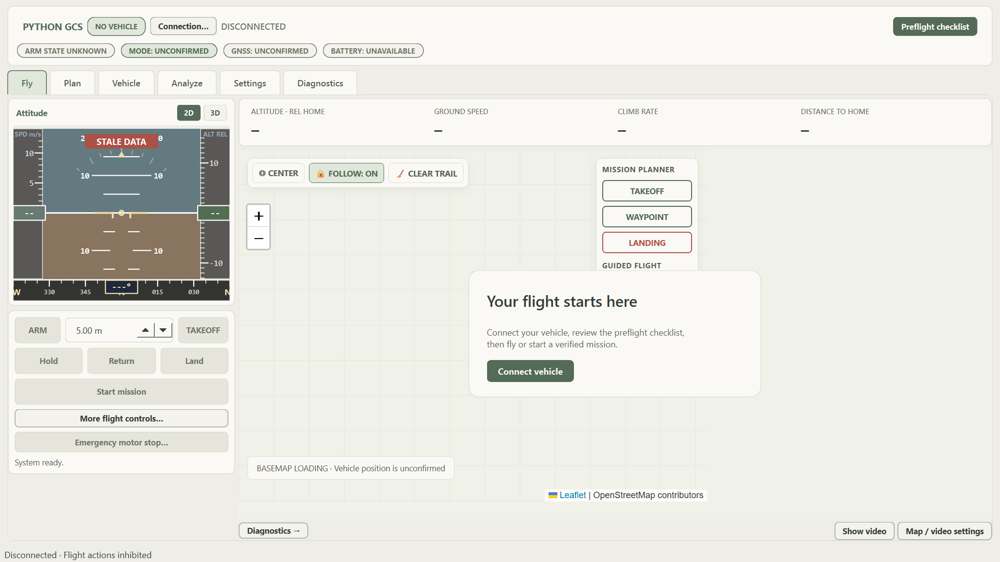

Open source · Python · PX4
A clearer view
of every flight.
A desktop ground station with a focused flight screen and dedicated space for planning, vehicle settings, and diagnostics.

The right tools.
In the right place.
Fly stays focused. Open a dedicated view when you need to plan a mission, inspect a parameter, or look more closely at the data.
Fly with fewer distractions
Attitude, key telemetry, map, and essential flight actions. Additional controls and video open only when you need them.
One simple workflow.
Choose your connection.
Use a PX4 simulator or a supported MAVLink transport. Connection details live in their own panel.
Review before you fly.
Build a mission, verify its readback, and inspect the preflight evidence. Missing telemetry stays clearly marked.
Keep the map in view.
Fly with essential controls nearby. Move diagnostics to another window when you need detailed monitoring.
Run it locally
Develop with the simulator.
Python 3.9+ and a PX4 SITL instance are required for the desktop workflow. PX4/Gazebo integration and real-aircraft validation are work in progress. Install the simulator separately; desktop connection code is available for development testing.
git clone https://github.com/HarryZ0305/python-gcs.git
cd python-gcs
python -m pip install -r requirements.txt
python main.pyBuilt so far. Still in progress.
Customized drone GCS with OpenStreetMap, improved mission planning, and an experimental telemetry-driven 3D attitude viewer.
PX4 connections & Gazebo — work in progress
The desktop has MAVLink connection and telemetry code. Real-aircraft validation and complete PX4/Gazebo integration are work in progress. Gazebo is installed separately. Browser aircraft connections are planned work in progress, not implemented yet; the current demo uses generated data.
3D attitude — experimental; validation in progress
The desktop has a telemetry-driven aircraft attitude viewer that requires WebGL. Graphics and flight validation are work in progress. 3D terrain reconstruction is planned work in progress, not implemented yet.
Advanced autonomy & replay — planned work in progress
Local mission editing, survey grids, a supported .plan subset, and historical CSV review are implemented. Terrain following, geofence editing, calibration wizards, broader mission formats, and full flight-log replay are planned work in progress. See feature status and implementation evidence.
A few useful distinctions.
Is the browser demo connected to an aircraft?
No. It is a local browser simulation for exploring the interface. Its flight motion, readings, video illustration, and event log are generated in your browser. Browser aircraft connections are work in progress (planned, not implemented yet). Desktop MAVLink code exists; real-aircraft validation and complete PX4/Gazebo integration remain work in progress.
What mission formats are supported?
The desktop editor supports the documented home-relative takeoff, waypoint, and landing subset of QGroundControl .plan files. It rejects unsupported mission semantics rather than silently changing them.
Where are the charts, logs, and camera controls?
Charts and event analysis have an Analyze view. Stream health and command messages are in Diagnostics, which can detach to a second window. Camera sources are configured in Settings, and video appears on demand in Fly.
Where can I see every screen?
The illustrated screen guide includes all six workspaces, principal dialogs, and viewing modes, with bold labels showing where each feature is.